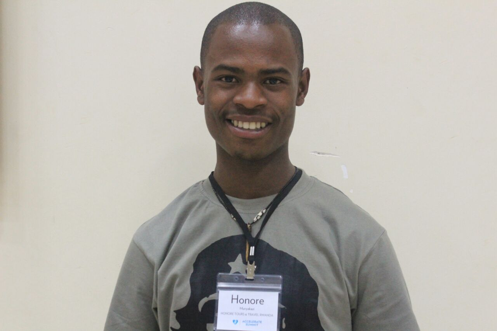

Who We Are
Honore Tours Initiative
Our work is centered on the Honore Tourism Association, a network of local communities, co-operatives and individuals who would like to participate in tourism activities, but often lack the knowledge or means to do so. Tourism plays a major role in the initiatives because we believe in its ability to be a tool for sustainable development, the alleviation of poverty, promotion of peace and conserving a culture.
The majority of Honore Tours & Travel’ activities focus on visits to our many partners such as; Ex-poachers pygmy’s peoples, the traditional healers&dancers, brick makers and the banana bark weavers. They guarantee a unique experience for the visitor and, where possible, an even chance join in and get your hands dirty.
We discussed with the leaders of each group or association how we could best contribute to ensure their continued growth. In many cases we agreed upon a financial contribution to a community account, knowing that even the weakest member of such groups, together with his or her family, will benefit directly from such an arrangement. This little additional income often opens up the opportunity to send another child to school or to buy equipment that significantly raises the productivity of the group. Whilst other groups may receive assistance in the form of professional promotion and the direct marketing of their activities. In this way we ensure the largest number of local people benefit from our activities and are actively encouraged to offer their own ideas for the form their recompense takes.
About Honore

Honore has gained experience as a Rwandan Tour organizer and Guide for various international Tour Operators. His professionalism and sincerity as well as his exceptional understanding of the needs and desires of international visitors have gained him renown among clients, and respect among the members of local communities.
He is Co-founder and President of the Mt. Kabuye hills Community Associations.
Honore Munyakazi - Managing director